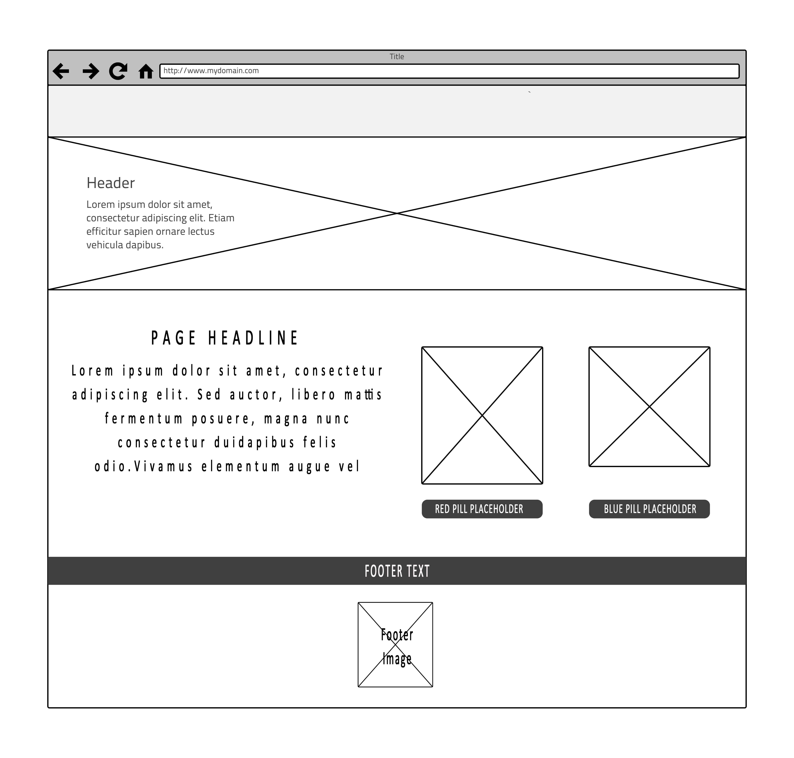
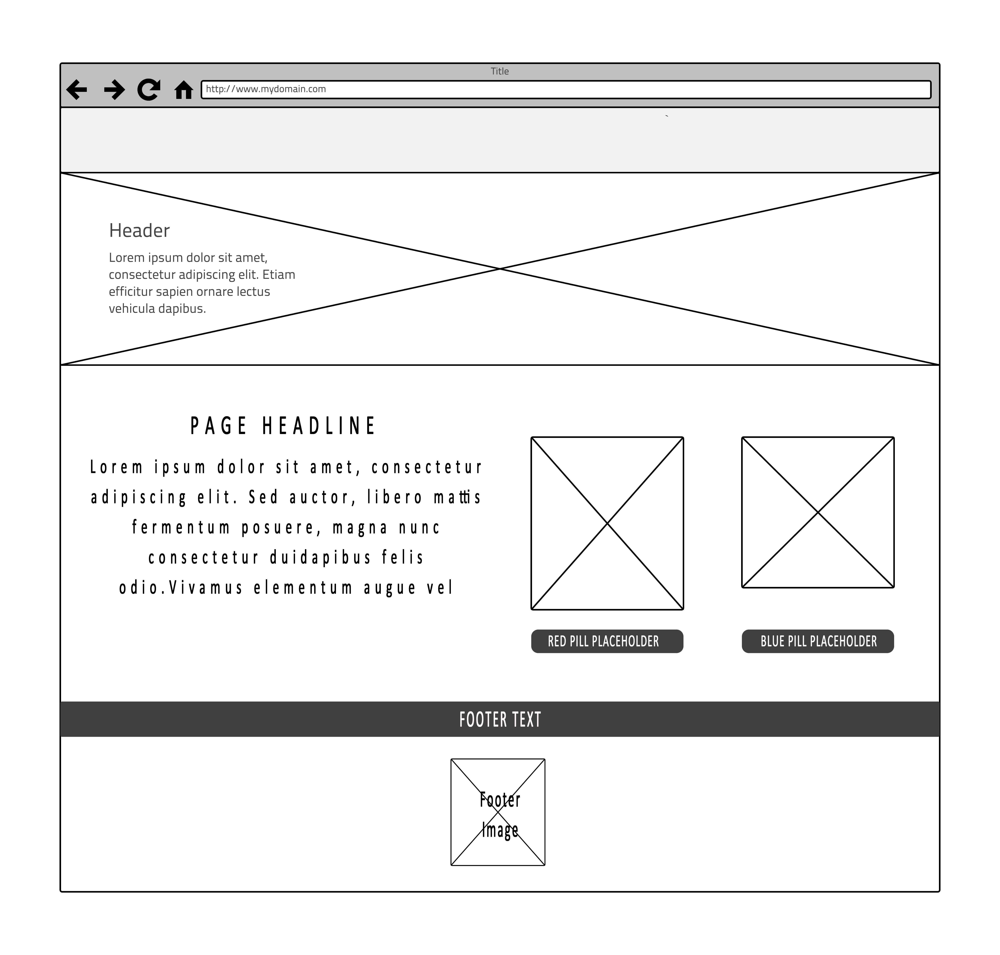

Pictured left is the mock-up idea I had for the mobile version of the site, fairly self-explanatory. Although worth noting is the fact that as of yet I have no idea how on earth I am going to get the embedded video to resize on mobile, a problem for next time I suppose?
Wireframes

Pictured right, is the Wireframe for the homepage. One of the features that unfortunately did not make the final product was the inclusion of two buttons that appeared as a blue pill and red pill respectively, and with the accompanying choice of allowing the user to choose which one.
Much like the official Matrix website, implementing this feature became a lot more tedious than my patience could handle. Additionally, I decided to rather have text, so as to mitigate any confusion with users that arent as familiar with the movie.

In terms of the homepage design, another aspect I retained from the original was the clickable bunny that lead to the official Matrix website.
I thought its intial appearance was a nice touch to the entire rabbit hole esque feeling of the website, another aspect I want to explore going forward is making more clickable links and dynamic redirects away from my site and into the vastness of the internet.
Pictured right, is the Wireframe for the homepage. One of the features that unfortunately did not make the final product was the inclusion of two buttons that appeared as a blue pill and red pill respectively, and with the accompanying choice of allowing the user to choose which one. Much like the official Matrix website, implementing this feature became a lot more tedious than my patience could handle. Additionally, I decided to rather have text, so as to mitigate any confusion with users that arent as familiar with the movie.

In terms of the homepage design, another aspect I retained from the original was the clickable bunny that lead to the official Matrix website. I thought its intial appearance was a nice touch to the entire rabbit hole esque feeling of the website, another aspect I want to explore going forward is making more clickable links and dynamic redirects away from my site and into the vastness of the internet.